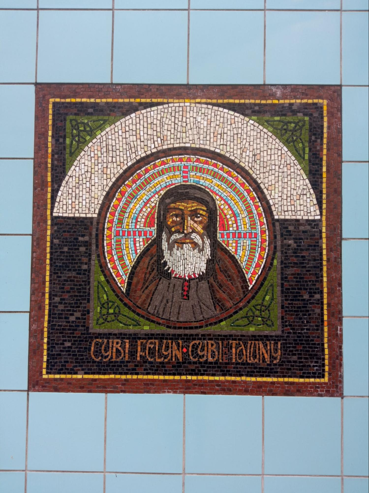
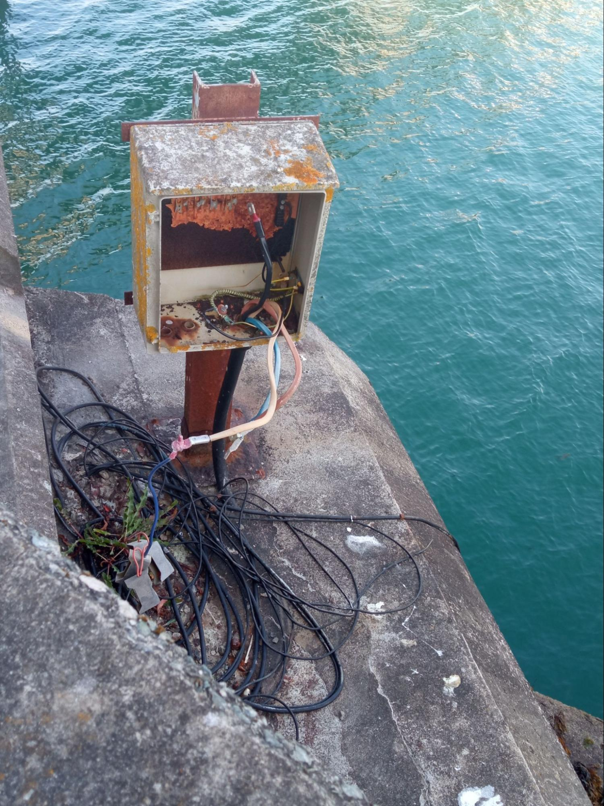

travel home
the more times I made the journey, the less special it became. it also became less long, less slow. or so it seemed. my perception shifted. I didn’t think about the work I could get done in the extra time needed to travel by train and ferry instead of by plane. I didn’t think about what a lovely time I would have gazing out at the scenery and reflecting on my life while on the train (sometimes I do, but it’s not a given). it’s just become a habit, not something I am doing to prove a point or be virtuous. it is my auto-pilot way to move between my two homes (pun intended)
things observed on the journey, June 9th
-the foot statue (although not the first time I've seen it)

-women sitting across from me on the train taking ecstasy on their way to a festival

-a very red sun setting (from the deck of the ferry)

-a lot of bad ferry art (but good ferry port art)
travel home